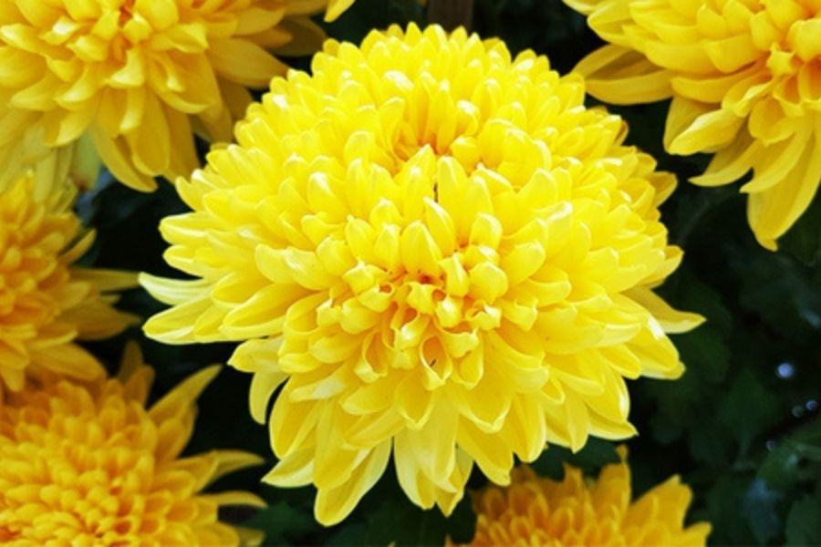

Minh họa BS Grid - Danh Sách Các Loài Hoa

Hoa cúc Indo
Giá khởi điểm: 3,500,000
Từ lâu, hoa cúc đã được trồng để làm cảnh, trang trí trong những sự kiện, ngày lễ trọng đại. Theo quan niệm của người xưa, hoa cúc tượng trưng cho sự trường thọ, thể hiện sự hiếu thảo, lòng biết ơn của con cháu đối với cha mẹ, ông bà, tổ tiên.
Xem chi tiết
Hoa hồng
Giá khởi điểm: 3,500,000
hoa Hồng đỏ là loài hoa của thần thoại và truyền thuyết. Vào thời Trung cổ, những người Công giáo đã chọn hoa Hồng đỏ làm biểu tượng cho máu của những người tử vì đạo. Chúng còn được dành riêng để dâng tặng cho Đức Mẹ Đồng Trinh.
Xem chi tiếtHoa Tulip
Giá khởi điểm: 4,000,000
Hoa Tulip nổi tiếng là biểu tượng của đất nước Hà Lan xinh đẹp, tượng trưng cho sự giàu có, nổi tiếng và một tình yêu hoàn hảo. Loài hoa này mang vẻ đẹp thanh lịch nhưng không kém phần kiêu sa.
Xem chi tiếtHoa Anh đào
Giá khởi điểm: 5,500,000
Hoa Anh đào là quốc hoa của Nhật Bản, tượng trưng cho vẻ đẹp thanh cao, sự thuần khiết và sức sống mãnh liệt. Loài hoa này cũng nhắc nhở con người trân trọng từng khoảnh khắc ngắn ngủi của cuộc sống.
Xem chi tiếtHoa Bỉ ngạn
Giá khởi điểm: 4,500,000
Hoa Bỉ ngạn mang trong mình vẻ đẹp ma mị với những cánh hoa đỏ rực rỡ như lửa. Trong văn hóa Á Đông, bỉ ngạn thường gắn liền với những truyền thuyết về sự chia ly, ký ức đau thương nhưng vô cùng sâu sắc.
Xem chi tiết